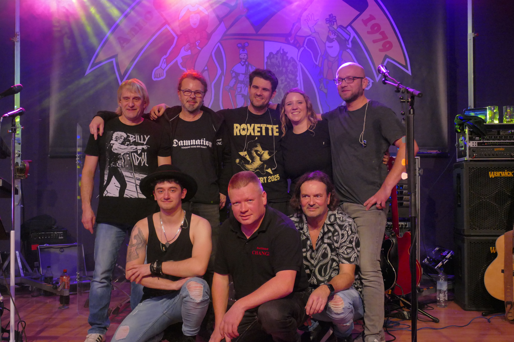
Change: Das Rock-Fundament aus dem Erzgebirge
Seit unserer Gründung im Jahr 1998 steht der Name Change für energiegeladenen Cover-Rock, der keine Gefangenen macht. Nach einer Pause haben wir 2022 den Reset-Knopf gedrückt und sind seitdem in neuer Besetzung, mit frischem Elan und mehr Spielfreude denn je zurück auf den Bühnen.
Was uns antreibt? Die Liebe zum echten, handgemachten Sound. Wir sind eine 8-köpfige Formation aus dem Herzen Sachsens und haben uns einer Mission verschrieben: Authentische Rockmusik ohne Kompromisse. Bei uns ist „Live“ Programm – wir verzichten konsequent auf Autotune und kürzen keine Instrumentalsoli weg. Wir zelebrieren das musikalische Handwerk bei jedem Ton.
Vier Jahrzehnte – Ein Setlist-Feuerwerk
Unsere musikalische Reise führt durch über 40 Jahre Rockgeschichte. Wir bringen die zeitlosen Hymnen der 70er, den glorreichen Stadion-Rock der 80er und 90er sowie die stärksten Hits der heutigen Zeit auf die Bühne.
Egal ob Stadt- oder Dorffest, Jubiläen oder exklusive Konzerte für echte Musikliebhaber – wir liefern Cover-Rock vom Feinsten direkt auf die Ohren. Wir freuen uns darauf, gemeinsam mit euch die nächste Bühne zu rocken!
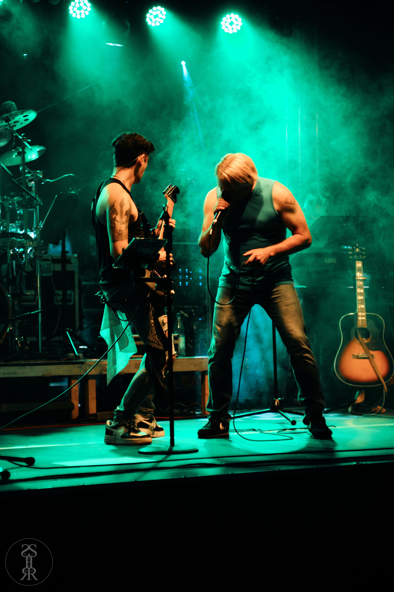
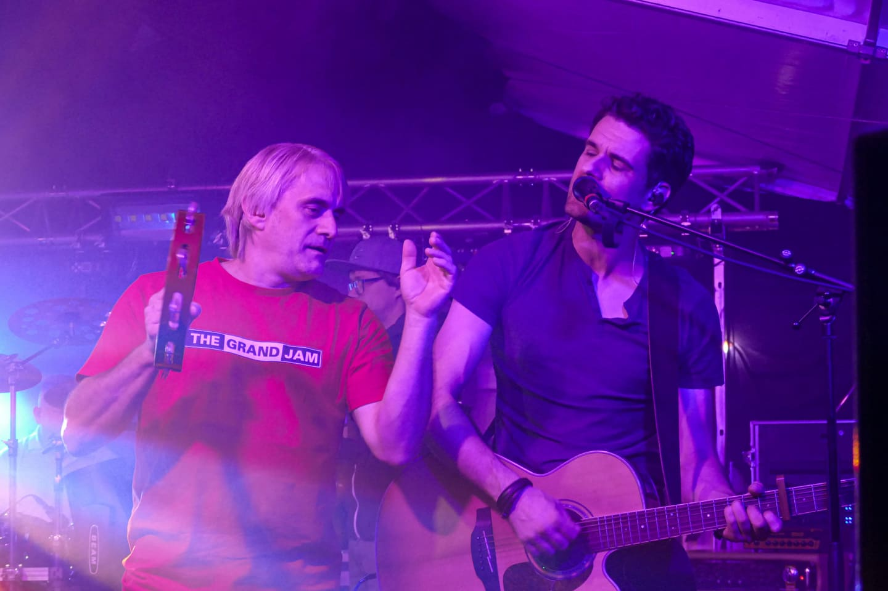
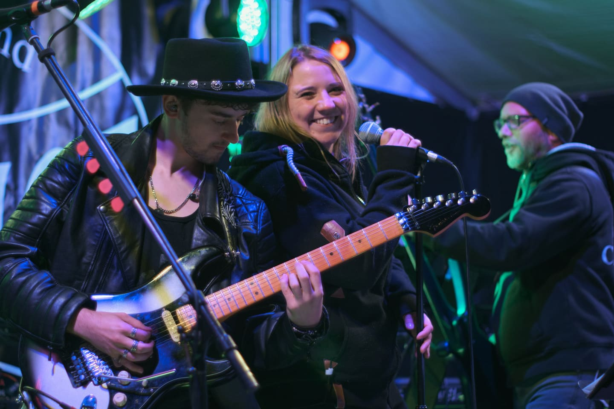
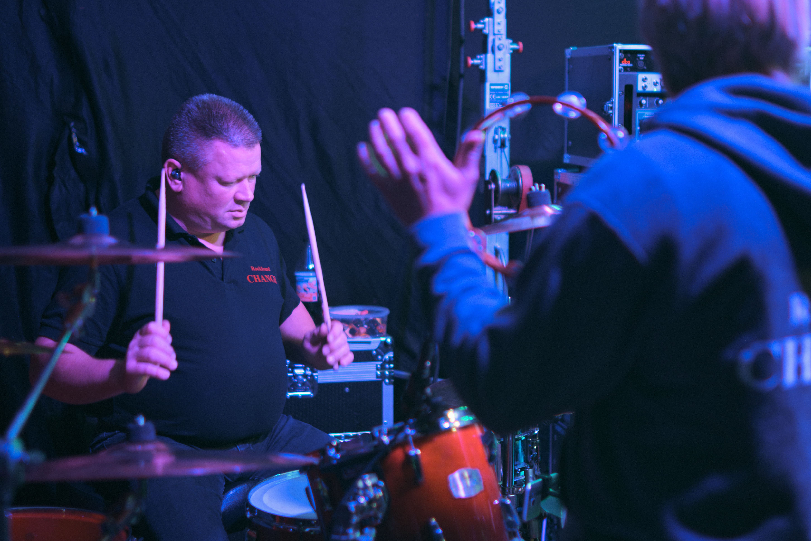
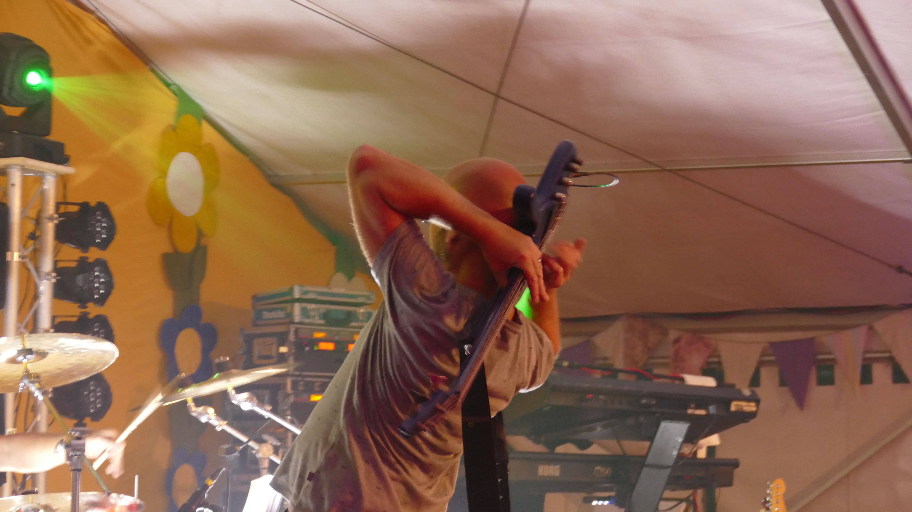
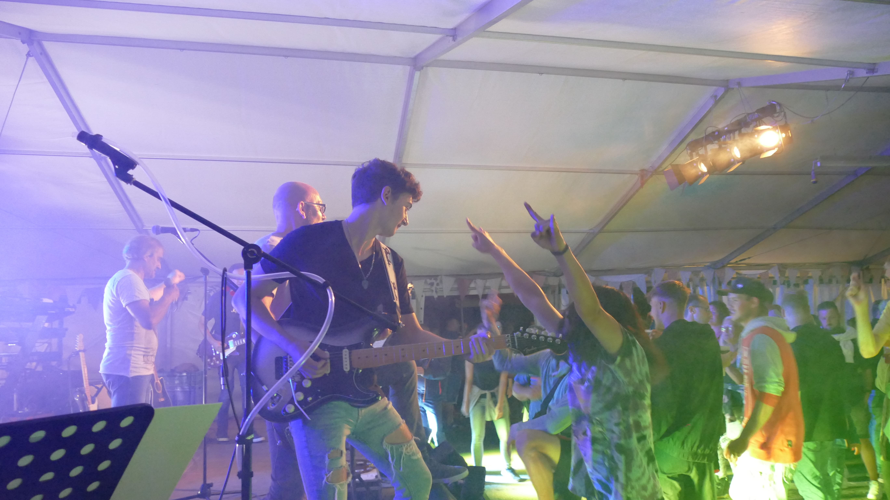
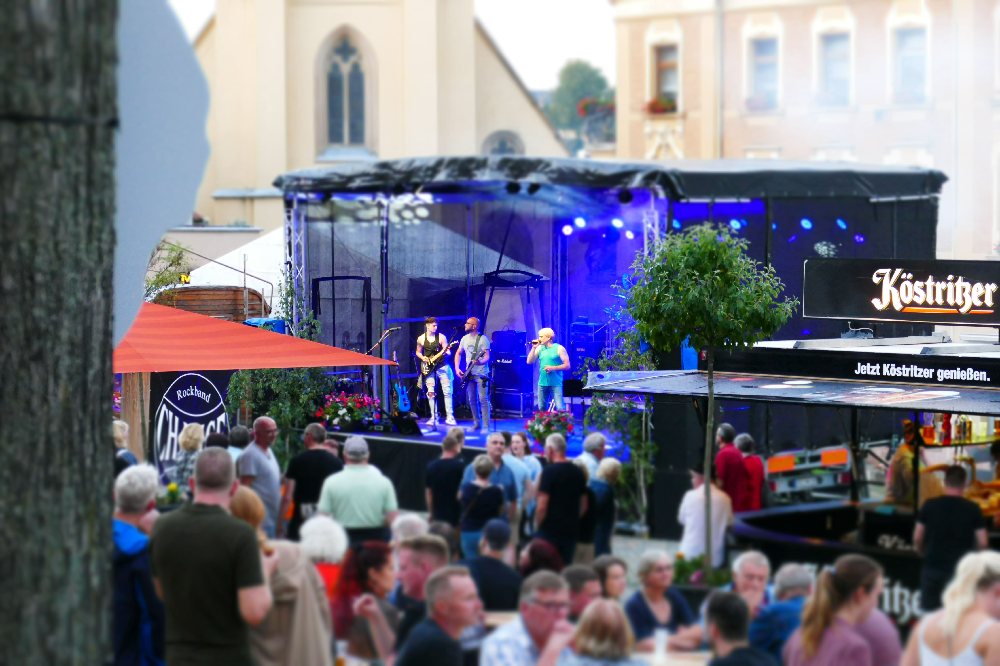
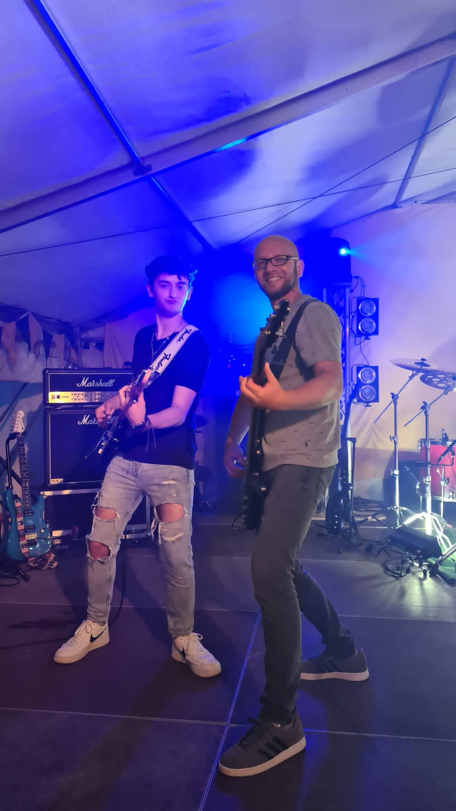
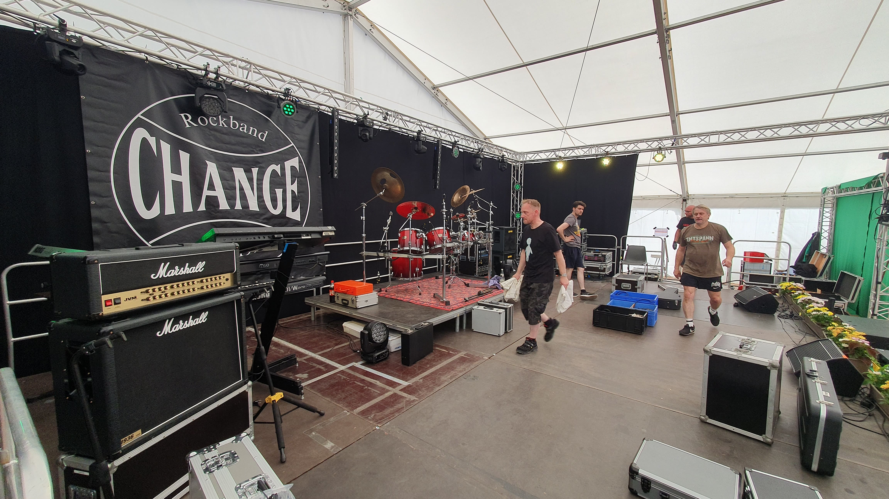
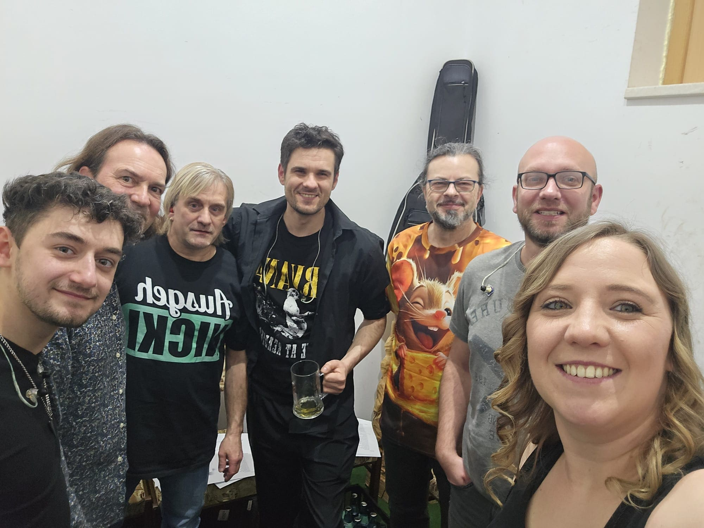
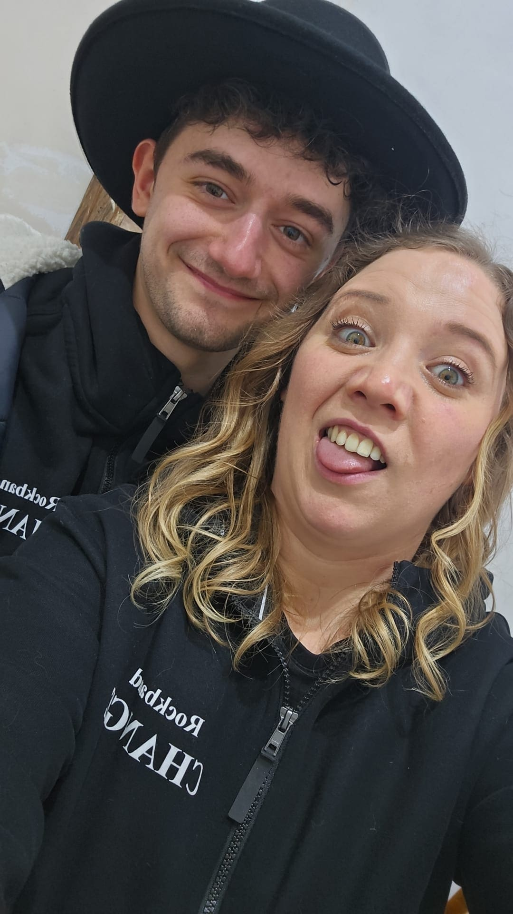
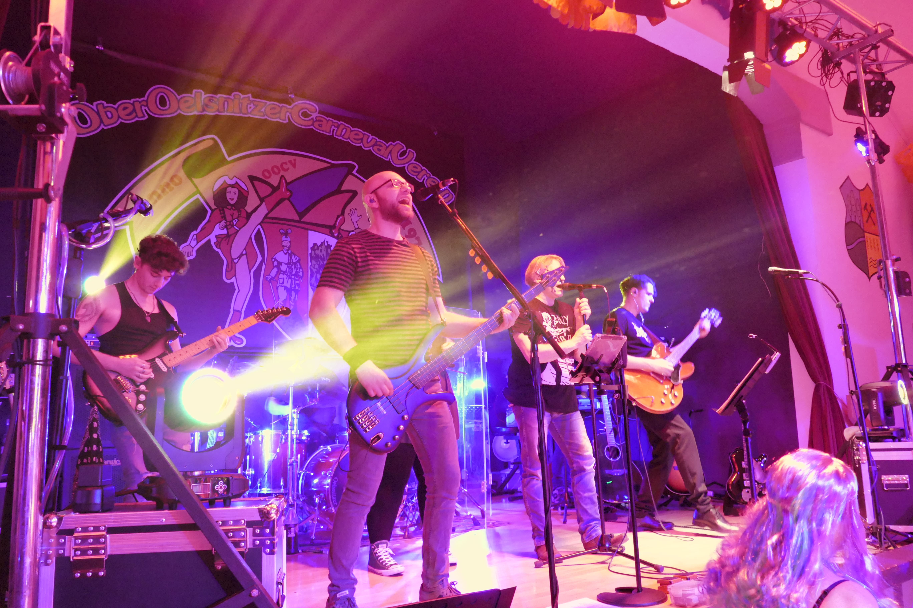
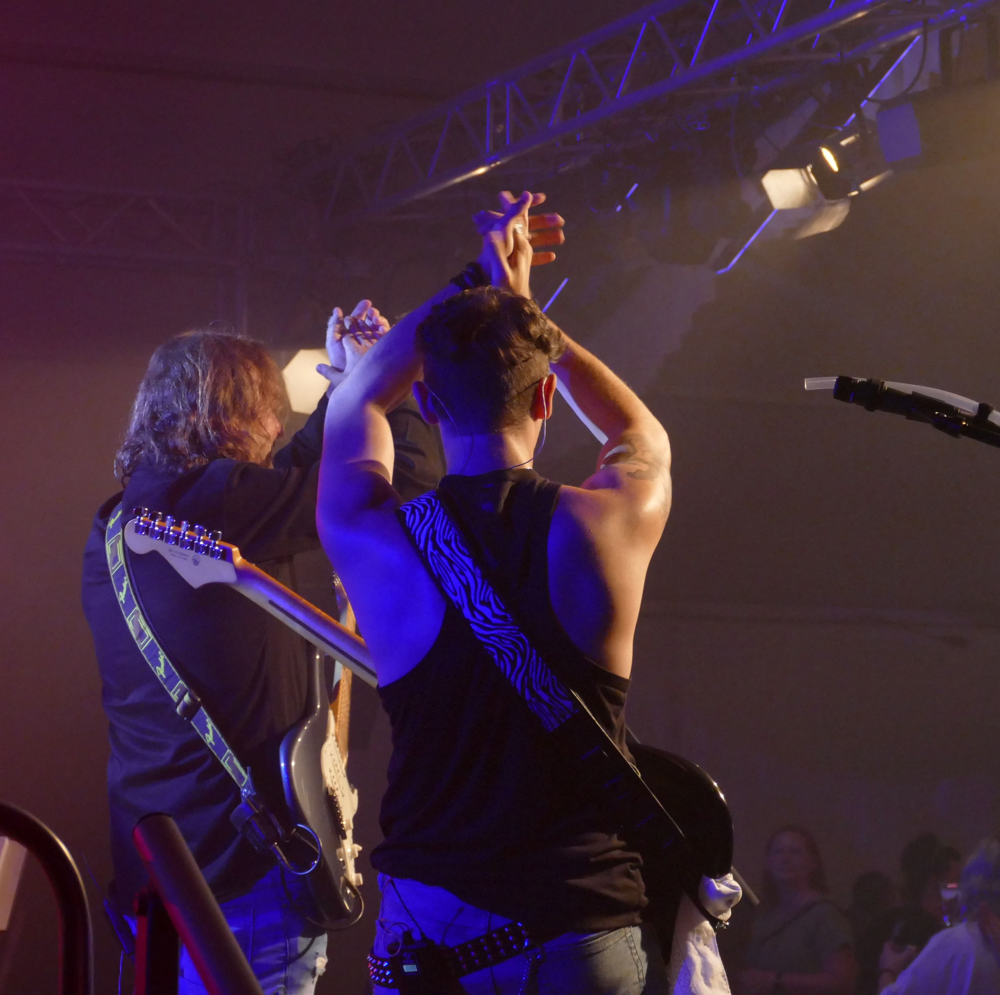
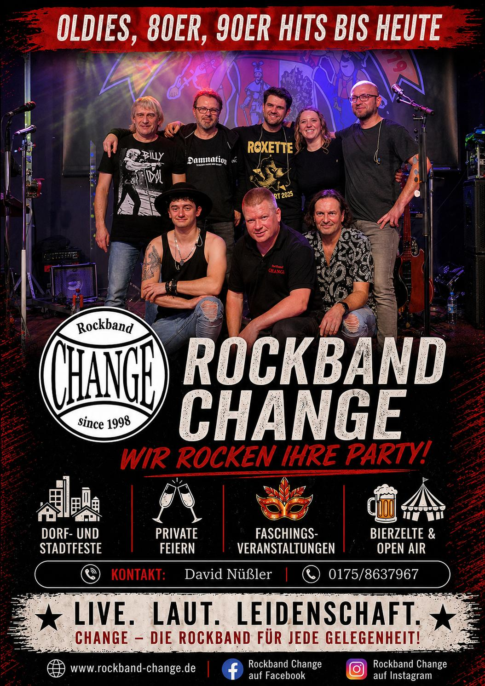